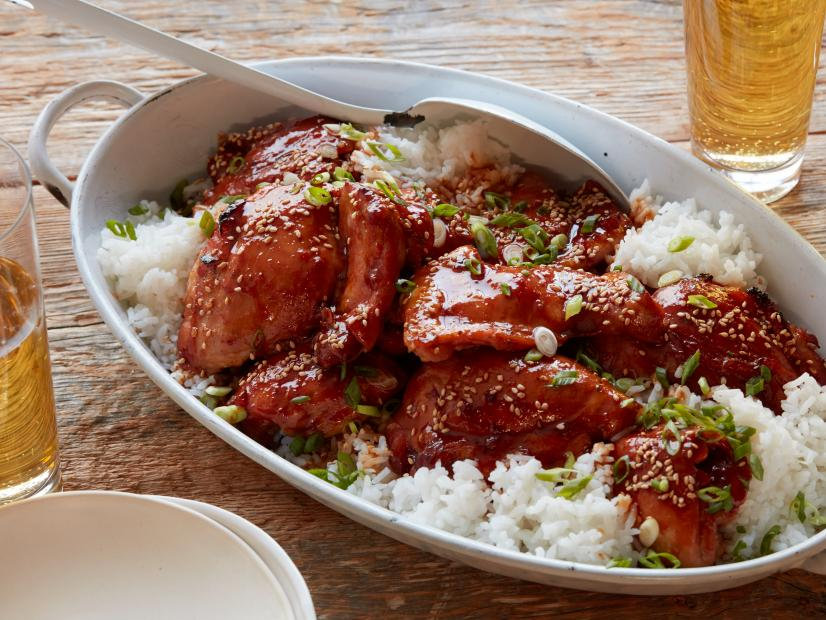
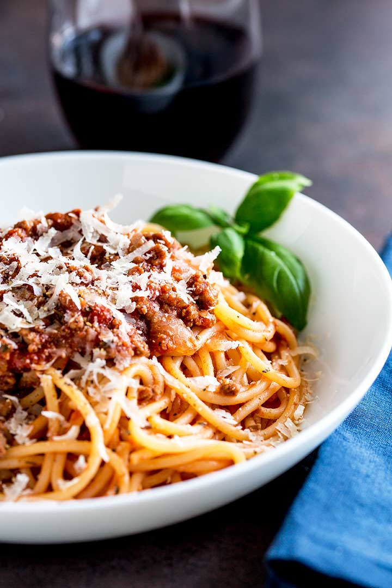
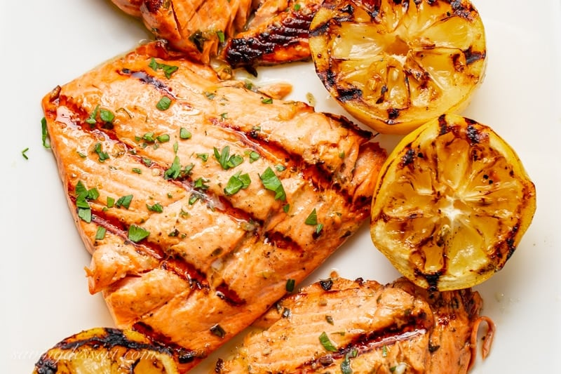

| Image | Title | Ingredients | Instructions | Videos |
|---|---|---|---|---|
.jpg) |
Delicious Pasta Carbonara |
|
1. Heat the pasta water: Put a large pot of salted water on to boil (1 tablespoon salt for every 2 quarts of water.). 2. Sauté the pancetta or bacon and garlic: While the water is coming to a boil, heat the olive oil or butter in a large sauté pan over medium heat. Add the bacon or pancetta and cook slowly until crispy. Add the garlic (if using) and cook another minute, then turn off the heat and put the pancetta and garlic into a large bowl. Beat the eggs and half of the cheese: In a small bowl, beat the eggs and mix in about half of the cheese. 3.Cook the pasta: Once the water has reached a rolling boil, add the dry pasta, and cook, uncovered, at a rolling boil.. 4.oss the pasta with pancetta or bacon: When the pasta is al dente (still a little firm, not mushy), use tongs to move it to the bowl with the bacon and garlic. Let it be dripping wet. Reserve some of the pasta water. Move the pasta from the pot to the bowl quickly, as you want the pasta to be hot. It's the heat of the pasta that will heat the eggs sufficiently to create a creamy sauce. Toss everything to combine, allowing the pasta to cool just enough so that it doesn't make the eggs curdle when you mix them in. (That's the tricky part.). Add the beaten egg mixture: Add the beaten eggs with cheese and toss quickly to combine once more. Add salt to taste. Add some pasta water back to the pasta to keep it from drying out. Serve at once with the rest of the parmesan and freshly ground black pepper. If you want, sprinkle with a little fresh chopped parsley. |
Video 1
Video 2 |
|  | Slow-Cooker Chicken Thighs |
|
1.Coat the insert of a 6-quart slow cooker with cooking spray and add the chicken thighs. In a glass measuring cup, whisk together the honey, ketchup, soy sauce, oregano, pepper flakes, garlic and ginger and pour over the chicken. Cover and cook on low until the chicken is cooked through and tender, 5 to 6 hours. Turn off the heat, uncover and let rest for about 10 minutes before serving. The chicken and sauce can be served as-is or, for a thicker sauce, remove the chicken and set aside, covered, to keep warm, then turn the slow cooker to high. Stir the cornstarch and 2 tablespoons cold water together until it resembles heavy cream. Pour the mixture into the sauce, cover and cook until the sauce is thick and bubbling, about 30 minutes. (The mixture must come to a boil to activate the starch and thicken the sauce.) Return the chicken back to the sauce and heat the chicken through, about 5 minutes.. 2.Transfer the chicken and sauce to a platter, sprinkle with the sesame seeds and scallions and serve hot with rice. |
Video 1
Video 2 |
|  | Classic Spaghetti Bolognese |
|
1. Cook ground/minced beef. 2. Sweat the onions. In a large Dutch oven (or a large skillet) over medium-high heat, add 2 tablespoons of olive oil. Add the finely chopped onion, a pinch of salt and cook until softened, about 5-7 minutes. 3. Brown the meat. Add the ground beef and break it up into smaller chunks with a wooden spoon. Allow to cook for a few minutes without stirring to get crispy and brown, then stir with a wooden spoon and cook through (until meat is no longer pink), about 7-8 minutes. 4. Make the sauce. Add the diced tomatoes and tomato paste. Cook, stirring frequently scraping the bottom of the pan, for 5 minutes. 5. Add the herbs and liquids, then simmer. Add the garlic, oregano, thyme, and bay leaf bundle, salt, pepper, red wine, and chicken stock. Give the sauce a stir (making sure to scrape all the browned bits at the bottom) and bring it to a simmer. Reduce the heat to medium-low, cover and let cook 20-25 minutes, stirring occasionally. Give it a taste, and if necessary, season with more salt and pepper. 6. Cook the spaghetti noodles. Meanwhile, bring a large pot of water to a boil and season liberally with salt. Cook spaghetti one minute shy of al dente according to the package directions. Reserve 1 cup of the starchy cooking water and drain. 7. Toss! Remove the herb bundle from the sauce and add the cooked spaghetti. Toss it all together, making sure all the pasta is coated with the sauce. At this point, you can adjust the pasta bolognese as needed by adding a few splashes of the reserved pasta cooking water to loosen it up to your desired consistency. Simmer for 1-2 minutes to finish cooking the spaghetti, then remove from the heat. 8. Garnish and Serve. Finish with the fresh basil and Parmesan cheese. Transfer to serving bowls and enjoy! |
Video 1
Video 2 |
|  | Lemon Herb Marinated Grilled Salmon |
|
Combine olive oil, lemon juice, green onions, parsley, rosemary, thyme, salt, black pepper, and garlic powder in a small bowl; reserve 1/4 cup for basting. Place salmon fillets in a shallow dish and pour remaining marinade on top. Cover and refrigerate for 30 minutes. Preheat the grill for medium heat and lightly oil the grate. Remove fillets from the refrigerator; discard marinade. Place fillets on the preheated grill skin-side down. Cook, basting occasionally with reserved marinade, until fish flakes easily with a fork, 15 to 20 minutes. |
Video 1
Video 2 |
 |
Easy Microwave Chocolate Mug Cake |
|
Mix flour, sugar, cocoa powder, baking soda, and salt together in a large microwave-safe mug; stir in milk, canola oil, water, and vanilla extract. Cook in the microwave until the cake is done in the middle, about 1 minute 45 seconds. |
Video 1
Video 2 |